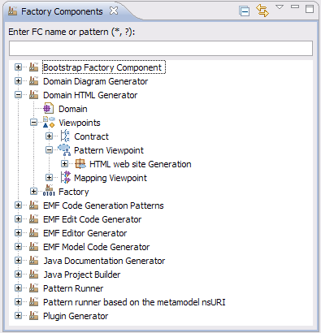
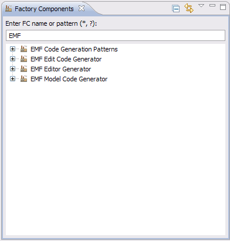
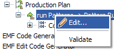
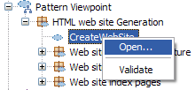

Factory Components View
The Factory Components View shows all factory components located in your the target platform.
The view is available under
 Window > Show View > Other... > SolFa > Factory Components
.
Window > Show View > Other... > SolFa > Factory Components
.

Main Features
- Displayed factory components can filtered in entering a FC name or a pattern using wildcards such as *, ?
Only factory components with a name that matches the entered pattern are displayed as shown in the image below.

- "Link with editor" button can be checked or not. When checked, that links the Factory Components selection to the active editor (only for patterns).
Actions
Several useful actions are available from the context menu of selected element within the Factory Components view.
The displayed Factory Components are not modifiable.
Here is the overall context menu structure:
- Open...: to open an editor that handles the selected element.
- Edit: to edit the selected element. It opens the related wizard dialog to check selected element attributes. Modifications are not allowed.
- Validate: to validate the selected element. It opens a dialog that reports the validation result.
The context menu items are revealed or grayed if necessary depending on the selected element.
Examples:



Factory Component


EGF Perspective